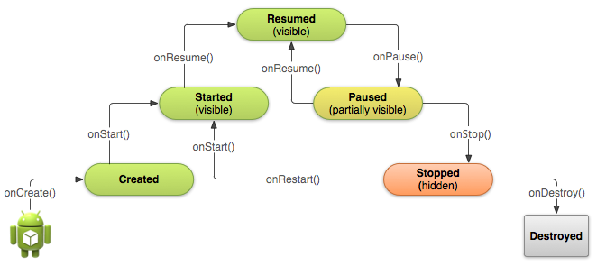
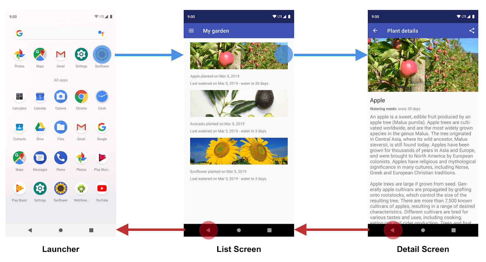
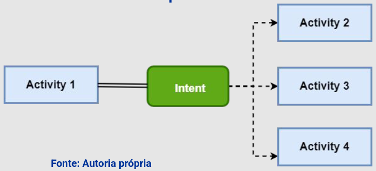

Disciplinas
DESENVOLVIMENTO PARA DISPOSITIVOS MÓVEIS. Concluído
Materiais
[UFMS Digital] Desenvolvimento Dispositivos Móveis - Módulo 3 - Unidade 1 - Vídeo 1
Prof° ministrante: Dr. Rafael dos Passos Canteri.
Activity.
- É uma tela visível, relação quase de um para um.
- Se uma aplicação precisar de uma interface, terá ao menos uma Activity.
- Aplicações Android geralmente contém mais de uma.
- Cada Activity responde a eventos do usuário e do sistema.
- Emprega uma ou mais Views para apresentar os elementos de UI para o usuário.
- Classe herdada pelo programador.
- É muito importante entender o ciclo de vida de uma Activity, isto é, os possíveis estados em que ela se encontra, que podem ser:
- Executando;
- Temporariamente interrompida em segundo plano;
- Completamente destruída.
- O sistema operacional cuida desse ciclo de vida.
- Mas é importante levar cada estado possível em consideração para desenvolver uma aplicação mais robusta.

Em geral, aplicativos possuem diversas telas (UI).
Portanto, os aplicativos precisam possuir formas de permitir a navegação do usuário entre essas telas.

Intents.
Formalmente, definidas como mensagens enviadas por um componente da aplicação (uma Activity, por exemplo) para o Android.
Informam a intenção de inicializar outro componente da mesma aplicação ou de outra.
Ex: Chamar outra tela.

- Há dois tipos de intents:
- dntents explícitas;
- dntents implícitas.
- Especificam o componente a iniciar pelo nome de classe totalmente qualificado.
- Normalmente, usa-se uma Intent explícita para iniciar um componente no próprio aplicativo, porque se sabe o nome de classe da Activity.
- Ex: iniciar uma nova Activity em resposta a uma ação do usuário ou iniciar um serviço para baixar um arquivo em segundo plano.
- Não nomeiam nenhum componente específico, mas declaram uma ação geral a realizar, o que permite que um componente de outro aplicativo a processe.
- Ex: exibir ao usuário uma localização em um mapa - solicita a outro aplicativo.
- Criar o método para invocar as outras telas.
dntent it = new Intent(Tela_origem.this, Tela_destino.class);
dtartActivity(it);